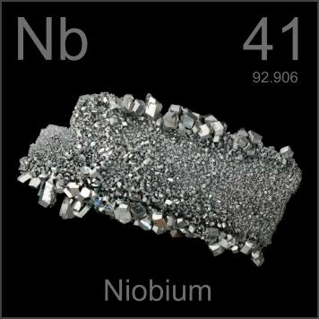

HOME
PREVIOUS
NEXT

Niobium
Atomic Weight: 92.90637
Density: 8.57 g/cm3
Melting Point: 2477 °C
Boiling Point: 4744 °C
This is high purity niobium crystal ribbon from Russia. New methods have made this form obsolete, and most was melted down. It is used in earrings and tongue studs because it can be colored by oxidation.